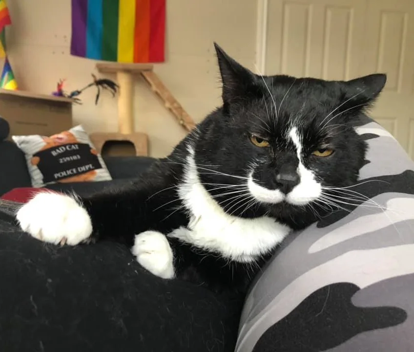
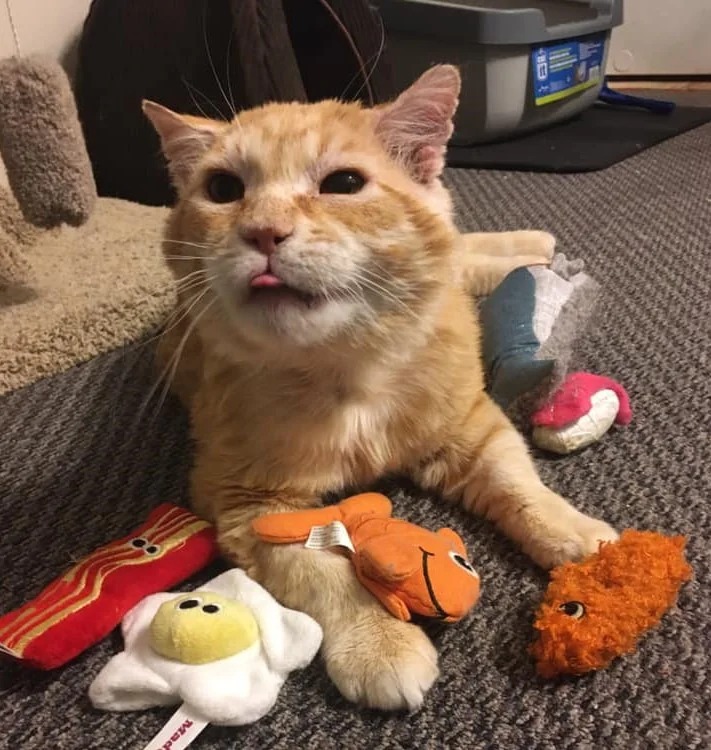
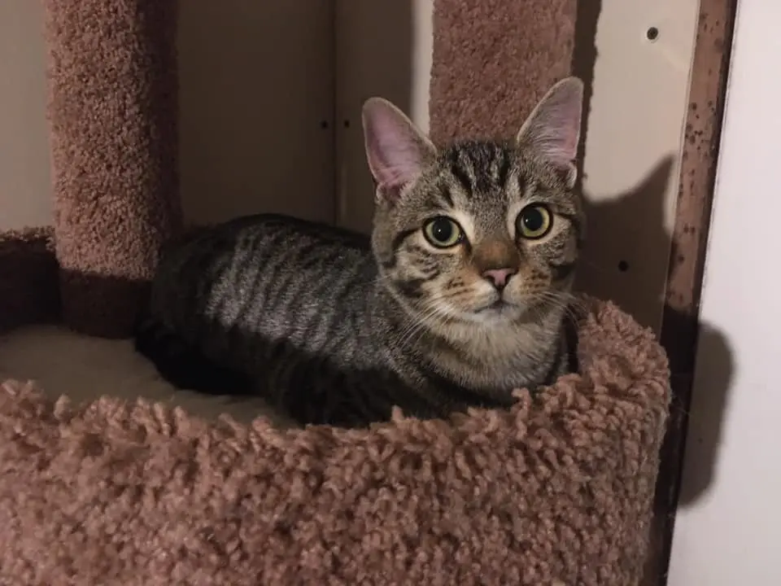
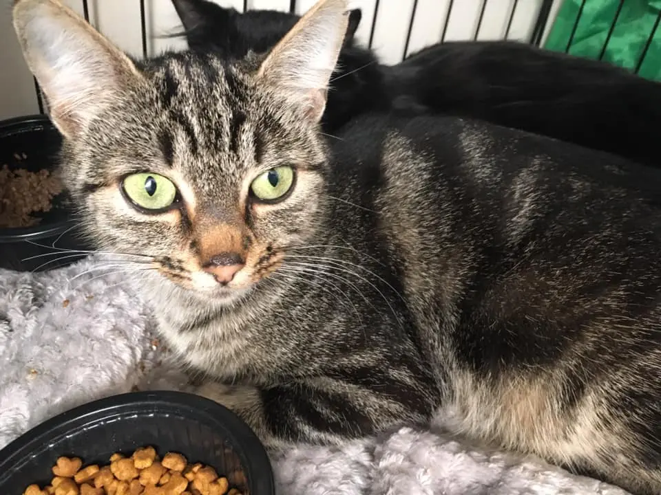
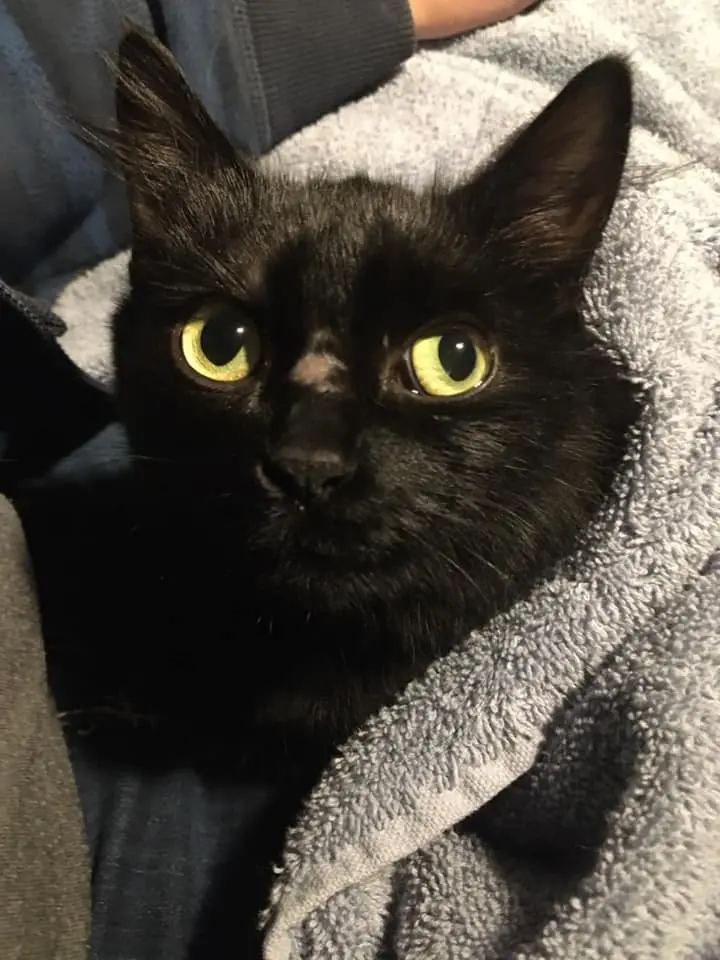
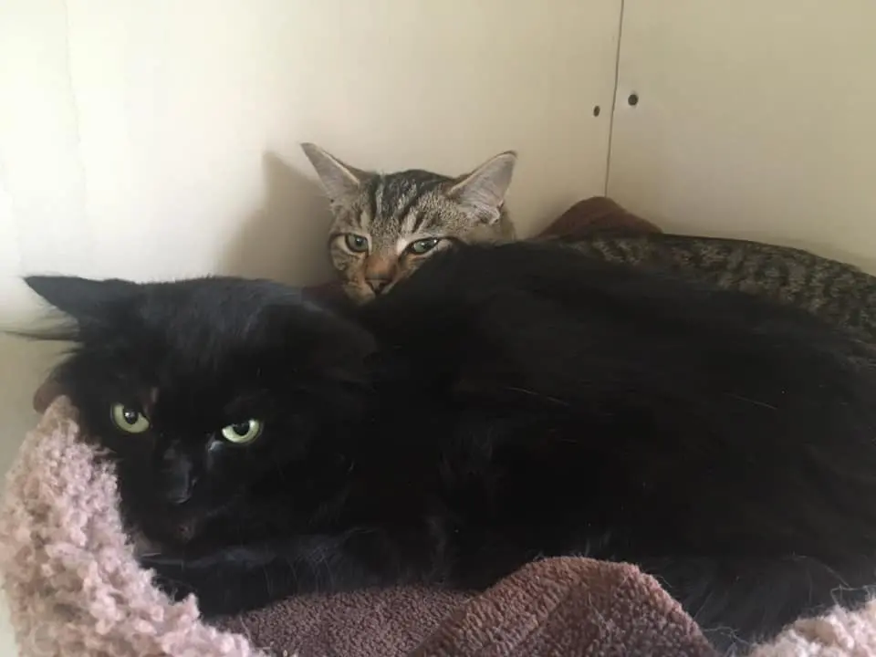
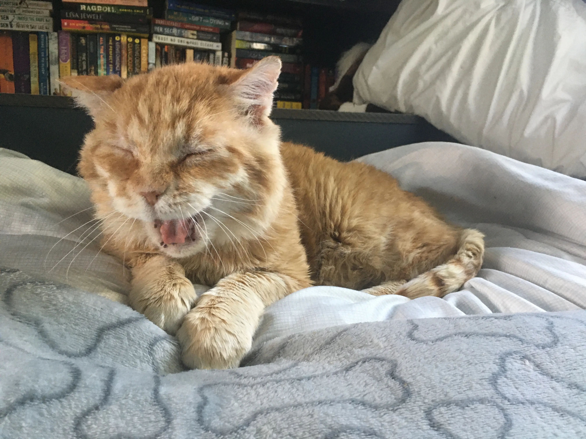
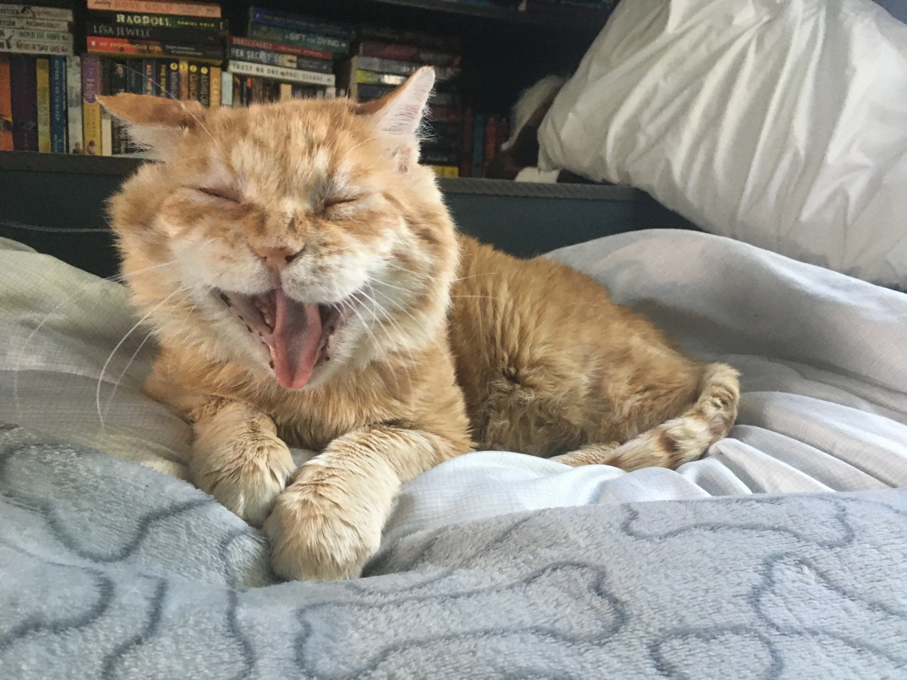

Feral Cats Family is dedicated to feral cats - cats that have not been socialized, and, as such, do not get a good chance to find a home at the shelters. We have worked with many feral and under-socialized cats, who turned into the most amazing companions and got their “happy endings.”
We specialize in socializing feral cats. Most of our experience comes from practice rather than theory, but we’ve done quite well with earning cats’ trust and helping them get comfortable with people. We find that time, patience, and willingness to change our approach are the key to developing a strong relationship with our foster cats. We help them blossom into amazing domestic cats and, once they’re ready, find them suitable homes.
 Latest News
All the Younglings are finally going for their vet appointment! The vets are super-overbooked due to COVID, so we had to wait for nearly three weeks. The girls’ spay is quite far away, too but we can hopefully get Hawkheart in for neuter on Wednesday - assuming he’s healthy enough for surgery.
They seem quite healthy, but need to be dewormed and treated for ear mites, and the wait was quite frustrating...
 Spending some quality time with the Younglings. Barkpaw and especially Hollypaw still need more socialization. Briarpaw, on the other hand, is way braver, though she still shyes away from hands. She was full-blown playing earlier - first with me, then all on her own. Hawkheart’s just enjoying indoor life. He gets a bit annoyed with the girls - especially when Briarpaw attacks his tail - but he can, for the most part, leave them alone.
As they’re not yet fixed, they don’t stay out at large unsupervised but they do get to interact with us nearby.
Our Younglings have their spay/neuter date! It’s long ways away - neuter mid-month, spays beginning of December - but it’s better than nothing. We’re also taking them for a vet check up mid-November to make sure they’re healthy as well as get them dewormed.
Pictured below are Hollypaw and Briarpaw. If you look closely, Holly’s the scaredy one even though Briar’s the one curled up behind her sister (look at the eyes). Briarpaw is actually doing better than her sisters: she purrs, kneads and rolls when she gets pets. She’s still scared of us on the ground but we’re sure that will change in no time. Hollypaw, on the other hand, is the least comfortable around us. While she might not hiss or attack, her look says it all (“I hate you!”). Barkpaw is somewhere in the middle of these two, though she’s in no rush to warm up to us.
Hawkheart is super sweet, but he really doesn’t want to leave our laps. Every time we try to move him, he either growls in a rather funny way or full-blown hisses at us and tries to crawl back into our laps. While we find it endearing and cute, we will need to work with him on not getting so possessive so that his future guardians don’t struggle with him (or end up kicking him to the streets because he’s “just too much” for them).
Winter came early here, so we’re enjoying some extra time with Mr. Chubby in the warmth of our house.
Just looks at that toothless yawn. I bet he’s happy to have a warm place this winter.
Unfortunately, we still haven’t heard back from the person trying to trap some cats for us. With all this snow and cold, I hope they’re hanging in there and will soon join so many other cats in a lifetime of warmth and comfort.
 Quick Links:
- See our fosters:
- Interested in adopting? Visit Curent Fosters to see our fosters
- See Best Moments to find lots of adorable formely-feral kitty-cats
- Resources you might want to look at:
- Found a cat to adopt? Adoption Information is here to help you understands your next steps
- See Socialization Guide if you want to learn how to socialize a feral cat
- Help Us Help Them
- Want to help us? You can post information about feral cats in need or donate to help our mission here
- Want to find out more?
- Visit About Us